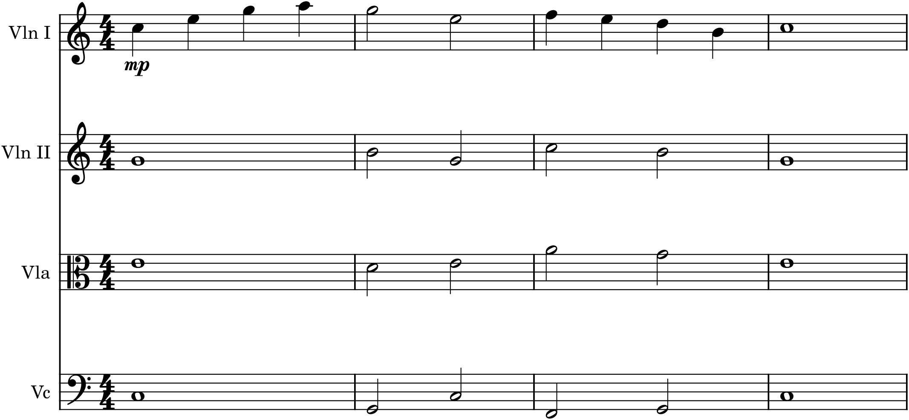

Composing for an ensemble and arranging for one are close cousins, and this project is about the second: taking music that already exists — one of your own pieces — and re-scoring it for a small group of instruments. Arranging is a distinct and valuable skill, and it is the perfect bridge to orchestration: you are not inventing new music but redistributing music you already have across a set of players, deciding who carries the melody, who supplies the bass, and who fills the harmony between. Do it well at the scale of a quartet, and you have done, in miniature, exactly what Part 7 will ask you to do with an orchestra. This is the last rehearsal before the big stage.
The brief
Take an earlier piece of your own — the melody-with-accompaniment from Project 3, or the ternary piece from Project 4 — and arrange it for a small ensemble of three or four instruments (a string quartet is the recommended model). Distribute the melody, bass, and inner harmony across the players; make each part idiomatic and worth playing; share the melody around; and balance the whole. Save the score and extract the parts.
P5.1Choose the piece and the ensemble
Reach back for material you already know well: your Project 3 piano piece (a melody with accompaniment) is ideal, because it already contains everything an arrangement needs — a tune, a bass, and harmony in between. For the ensemble, the string quartet (Chapter 30) is the best first choice — four flexible voices, a familiar mapping to four-part writing, and a ready MuseScore template — though a mixed trio (say flute, clarinet, and cello) or any small group works on the same principles. We will follow the book’s running tune, arranged for quartet.
P5.2Reduce the texture
Before redistributing anything, see the music as its component lines. Look at your piano piece and identify its three functional layers (Chapter 20): the melody (usually the top of the right hand), the bass (the bottom of the left hand), and the inner harmony (everything between). A piano texture with a broken-chord accompaniment is really a melody, a bass, and a couple of inner chord-tones with the chord simply spread out in time; your job is to pull those layers apart. This step is the reverse of Chapter 20’s elaboration — you are reading the structural voices back out of the finished texture, so you can hand each to an instrument.
P5.3Assign the parts
Now distribute the layers across the ensemble, using the quartet-as-four-voices mapping of Chapter 30: the melody to the first violin, the bass to the cello, and the inner harmony to the second violin and viola. Here is the running tune, arranged exactly this way:

Compare Figure P5.1 with the piano original and the method is plain: the melody is untouched in the first violin; the cello takes the bass notes the left hand was outlining; and the harmony the left hand’s broken chord implied is now sustained in the two middle instruments. The music is identical; only its distribution has changed.
P5.4Make each part idiomatic
A literal transcription is only the starting point. Now adapt each line to its instrument (Chapters 27, 30). A piano’s rapid broken chord may not suit a sustained-tone instrument, so it might become held notes (as in the figure), or a gentler repeated or arpeggiated figure shared among the players. Check that every part sits in its instrument’s comfortable range and reads in the right clef (the viola in alto clef). And give each part enough to do that a real player would not be bored — even an inner voice should move with some life rather than sitting on one pitch for pages. Idiomatic arranging means each musician gets music that fits their instrument and rewards playing it.
P5.5Share the melody and use the colours
The single biggest improvement you can make over a plain transcription is to move the melody around (Chapters 29–30). Do not leave it in the first violin the whole time. Give a phrase to the cello, singing in its rich tenor register, with the violins accompanying above; hand a line to the viola for a warm inner colour; trade a figure between the two violins in dialogue. Each instrument has its own voice, and an arrangement that uses those different colours — the cello’s depth, the viola’s warmth, the violins’ brightness — is far more alive than one that treats three of the four players as mere accompaniment. This is the payoff of a real ensemble over a single piano: variety of colour, and it is yours to exploit.
P5.6Balance and finish
Finally, balance and polish (Chapter 30). Make sure the melody — wherever it currently lives — stands out, thinning or softening the parts around it, especially when the tune moves to a lower or gentler instrument. Add dynamics and articulations suited to each part, check the whole for pacing, and consider contrast: dropping to two or three instruments for a passage makes the full four-part texture feel richer when it returns. Then save the score and extract the parts — you now have real, playable music for a real ensemble.
Hear the colours
A piano plays every note with the same timbre; an ensemble does not, and that is the whole point. As you arrange, play the result back constantly and listen to the colours: the same chord sounds one way in three high strings and quite another with the cello on the bottom. Move the melody to a different instrument and hear how the character changes though the notes do not. Arranging is composing with timbre as much as with pitch — which is exactly the door into orchestration.
P5.7Going further
Arrange the same piece for a different ensemble — a wind trio, or a group mixing strings and winds — and hear how the change of instruments transforms it. And keep this arrangement: the skills you have used here, scaled up, are precisely orchestration, and the Capstone will ask you to orchestrate a piece like this one for a small orchestra.
Done when…
- An earlier piece of yours is fully scored for a small ensemble (three or four instruments), each on its own part in the correct clef and range.
- The melody, bass, and inner harmony are sensibly distributed across the players, and the melody is shared among instruments rather than fixed in one.
- Each part is idiomatic and worth playing, and the ensemble’s different colours are used, not wasted.
- The texture is balanced, with the melody always audible, and the piece is marked with dynamics.
- The score is saved and the parts extracted — ready to hand to players, and one step from the orchestra.